Scaling Memcache at Facebook (2013)
本文介绍 FB 基于 memcached 构建统一缓存层的最佳实践。全文递进式地讲述 单集群 (Single Front-end Cluster)、多集群 (Multiple Front-end Clusters)、多区域 (Multiple Regions) 环境下遇到的问题和相应的解决方案。尽管整个解决方案以 memcached 为基本单元，但我们可以任意地将 memcached 替换成 redis、boltDB、levelDB 等其它服务作为缓存单元。
在下文中，需要注意两个词语的区别：
- memcached：指 memcached 源码或运行时，即单机版
- memcache：指基于 memcached 构建的分布式缓存系统，即分布式版
Background
与大部分互联网公司的读写流量特点类似，FB 的整体业务呈现出明显读多写少的特点，其读请求量比写请求量高出若 2 个数量级 (数据来自于 slides)，因此增加缓存层可以显著提高业务稳定性，保护 DB。
Pre-memcache
在使用缓存层之前，FB 的 Web Server 直接访问数据库，通过 数据分片 和 一主多从 的方式来扛住读写流量：
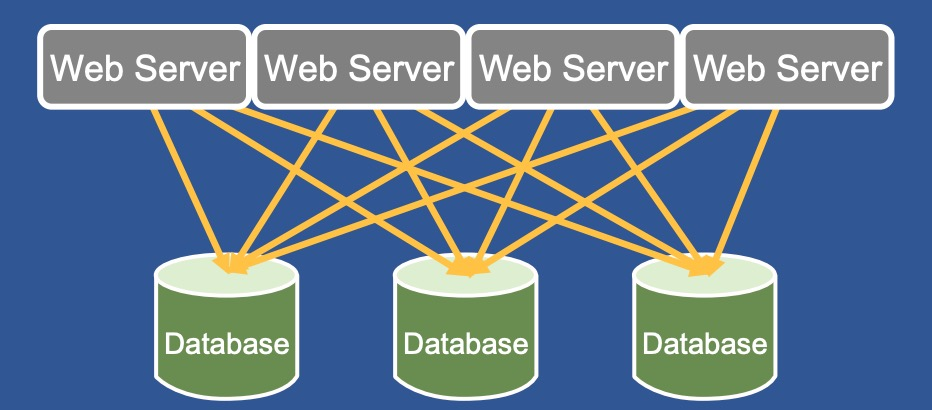
但随着用户数数量飙升，单纯靠数据库来抗压成本高，效率低。
Design Requirements
系统设计的第一步，就是要明白系统的要求。FB 缓存层的设计要求可以概括为：
- 数据读 QPS 为 10亿
- 支持多区域
- 支持平滑升级
- 缓存层与持久化层数据保持 最大努力最终一致性 (best-effort eventual consistency)
Cache Policy
memcache 的 cache policy 可以用 2 个词概括：
- demand-filled look-aside (read)
- write-invalidate (write)
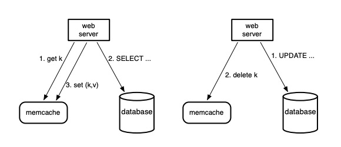
如上图所示：demand-filled look-aside 指读数据时，web server 先尝试从 memcache 中读数据，若读取失败则从持久化存储中获取数据填充到 memcache 中；写数据时，先更新数据库，然后将 memcache 中相应的数据删除。采用 write-invalide 的主要原因有两个：
- 删除操作幂等，当任何异常发生时可以重试
- write-invalidate 与 demand-filled 在语义上是天作之合
这里需要注意的是，不论使用哪种 cache policy，没有分布式事务的支持都无法保证缓存层数据与持久化层数据的一致性。但实践中往往不需要二者的强一致保证，因此类似 look-aside demand-filled 和 write-invalidate 这种组合策略在实践中比较流行。更多有关 Cache Policies 的讨论欢迎阅读我的 这篇博客。
In a Cluster: Latency and Load
本节探讨在一个集群内部部署上千个 memcached 服务遇到的挑战和相应的解决方案。在这个规模上，系统优化的主要精力集中在如何减少获取缓存数据的时延 (latency)，抵抗 cache miss 时造成的负载压力 (load)。
Scale-out
随着用户数量增加，服务本身可以通过横向扩容支撑更高的并发请求，相应地缓存层也需要扩容。FB 采用的是一种常见的扩容方案：部署多个 memcached 服务，形成单个缓存集群，并通过 consistent hashing 将缓存数据散列在不同的 memcached 实例上。
High Fanout
在 FB 的服务中，载入一个热门的网页平均需要从 memcache 中获取 521 条不同的数据，如果出现 cache miss 则需要从持久化存储中获取数据，这些数据读取请求的时延都将影响到服务的质量。通常不同数据的读取之间存在一定的先后依赖关系，可以表示成一个有向无环图 (DAG)，如下图所示：
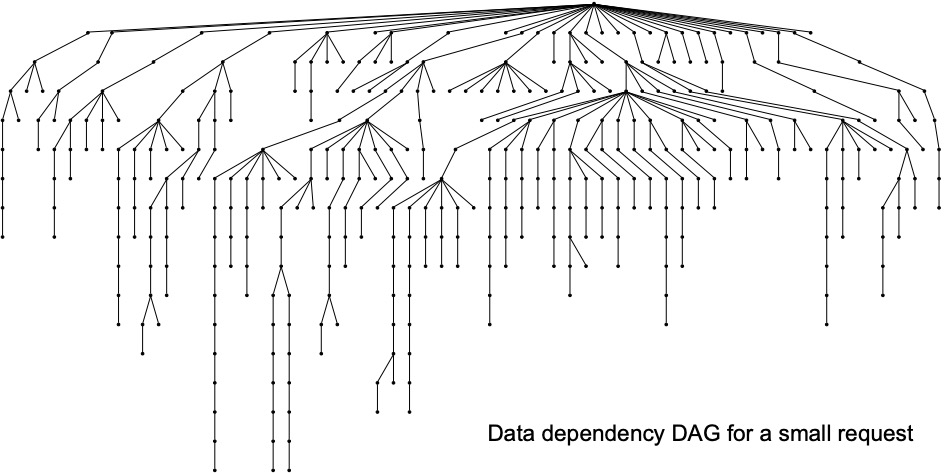
我们称这种放射状的数据读取模式为 fanout。
Reducing Latency
面对 high fanout，memcache 集群首先要面对的问题就是 all-to-all communication。由于缓存数据被散列到不同的 memcached 实例上，每个 web server 都可能需要与所有 memcached 服务通信：
- 由于 fanout 的存在，处理每个请求需要各个 web server 从多个 memcached 实例上获取数据，如果这些数据在短时间内忽然到来，可能造成网络拥堵，即 incast congestion
- 由于每个 memcached 实例都持有一部分数据，这使得每个实例在高负载下都有可能成为服务瓶颈
Parallel Requests and Batching
面对这些问题，应用层上至少可以做一件事：parallel requests and batching。由于每个请求可能需要在同一个 memcached server 上取多条数据，那么我们可以在 web server 的逻辑中减少 RTT 次数，将可以一起取的数据通过一次 RTT 一并取出，减少时延。
Client-server Communication
在缓存层上，FB 的主要思路就是将控制逻辑集中到 memcache client 上。memcache client 分成两部分：sdk 与 proxy，后者被称为 mcrouter。mcrouter 向外暴露与 memcached 相同的接口，在 web server 与 memcached server 之间增加一层抽象。
由于读多写少，且读数据对错误的容忍度高，因此 memcache client 使用 UDP 与 memcached server 通信，因为 UDP 没有连接的概念，通常处理读请求时都是由 sdk 与 memcached server 之间直接通信。sdk 使用 UDP 通信时，一旦发现丢包或者顺序错误，就会报错，而不尝试解决错误。在论文发表当时，FB 的服务高峰期中，只有约 0.25% 的读请求被抛弃。
处理写请求时，memcache sdk 使用 TCP 与部署在该宿主机上 mcrouter 通信。如此一来，每个 web server 就只需要与单个 mcrouter 建立连接，由后者来保持与不同 memcached server 之间的连接，从而大大减少维持 TCP 连接、处理网络 I/O 所需的 CPU 与内存资源，这种做法通常被称为 connection coalescing。
从统计数据上看，通过使用 UDP 来处理读请求能够将读请求的整体时延降低 20% 左右。
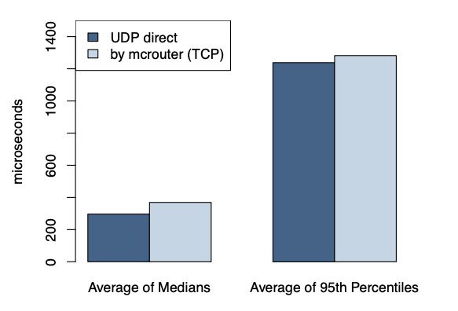
Incast Congestion
为解决 incast congestion 问题，memcache clients 也实现了拥塞控制逻辑。类似于 TCP 的 congestion control，client 的滑动窗口会根据网络拥堵状况自动扩容和缩容。与 TCP 不同的是，来自于同一个 web server 的请求都会被放入同一个滑动窗口中。
下图展示的是 window size 对请求时延的影响：
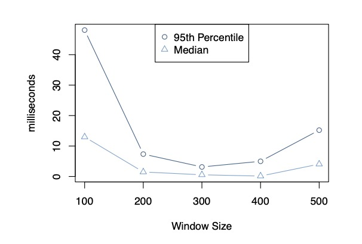
window size 太小时，许多请求都在排队；window size 太大时，可能出现网络拥堵。因此动态地找到其中的 sweet spot 就是拥塞控制的主要目标。
Reducing Load
使用 memcache 可以减少请求直接访问 DB 的次数，但出现 cache miss 时，DB 依然会承受负载压力，一条热点数据可能造成瞬间高压。
Leases
FB 在 memcache 中通过引入 leases 来解决两个问题：
- stale set：过期写入
- thundering herds：瞬间高压
Stale Set
look-aside cache policy 下可能发生数据不一致：
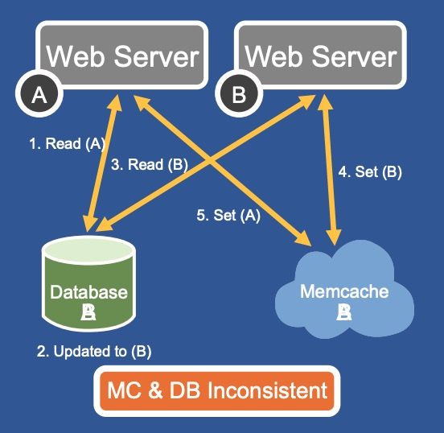
假设两个 web server， x 和 y，需要读取同一条数据 d，其执行顺序如下：
- x 从 memcache 中读取数据 d，发生 cache miss，从数据库读出 d = A
- 另一个 memcache client 将 DB 中的 d 更新为 B
- y 从 memcache 中读取数据 d，发生 cache miss，从数据库读出 d = B
- y 将 d = B 写入 memcache 中
- x 将 d = A 写入 memcache 中
此时，在 d 过期或者被删除之前，数据库与缓存内的数据将保持不一致的状态。引入 leases 可以解决这个问题：
- 每次出现 cache miss 时返回一个 lease id，每个 lease id 都只针对单条数据
- 当数据被删除 (write-invalidate) 时，之前发出的 lease id 失效
- 写入数据时，sdk 会将上次收到的 lease id 带上，memcached server 如果发现 lease id 失效，则拒绝执行
Thundering Herds
look-aside cache policy 的另一个问题是可能引发瞬间高压：
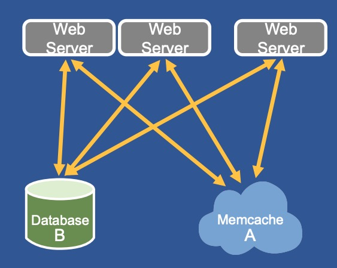
当数据出现访问热点时，可能导致成千上万个请求同时发生 cache miss，从而重击 DB。通过扩展 lease 机制可以解决这个问题。每个 memcached server 都会控制每个 key 的 lease 发放速率。默认配置下，每个 key 在 10 秒内只会发放一个 lease，余下访问同一个 key 的请求都会被告知要么等待一小段时间后重试或者拿过期数据走人。通常在数毫秒内，获得 lease 的 web server 就会将数据填上，这时其它 client 重试时就会成功，整个过程只有一个请求会穿透到 DB。
Stale Values
在一些能够容忍过期数据的场景下，我们还有可能进一步减少负载。当数据被删除时，memcached server 可以将它短暂地保存到另一个数据结构中，后者存储着最新删除的数据。此时 web server 可以自行决定是等待新的数据还是读取过期数据。
Memcache Pools
将 memcache 作为通用缓存层意味着所有的、不同的 workloads 将共享这一基础设施。不同的 workload 之间可能互补，也可能互斥。从更新频率的维度出发，FB 团队统计了不同更新频率数据的 working set 大小：
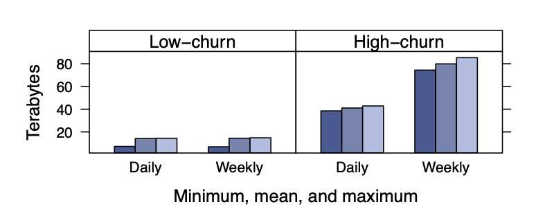
可以看出，缓存层存储的所有数据中，更新频率高的占大头。这时候就有可能出现更新频率高的数据将更新频率低的数据从缓存中挤出的现象。
为了解决这种问题，FB 将一个集群内部的 memcached 实例分成不同的 pools：
- default(wildcard) pool：默认 pool 用来存储大部分数据
- small pool：存储访问频率高但 cache miss 的成本不高的数据
- large pool：存储访问频率低但 cache miss 的成本特别高的数据
- ...
可以理解成是 Bulkheads 设计模式的应用。
Replication Within Pools
在一些 pools 内部，当一个 memcached 实例无法承载读压力时，可以通过副本 (replication) 来提高读效率，降低时延，即将整个 memcached 实例中的数据复制到另一个实例中。之所以选择复制整个实例的数据而不是在更细粒度上复制数据，主要目的在于不想增加 web server 获取数据所需的 RTT 次数：如果只复制一部分数据，原本只需要一次批量读取请求就能获取的数据，就可能需要通过请求多个实例来获取，这反而可能增加时延，降低效率。当然，这种方案也需要数据发生更新时，需要让它在多个副本中失效才行，所以本质上是一个写效率换读效率的过程。
Handling Failures
在云原生环境中，memcached server 同样可能遭遇网络失联或者自身宕机。如果整个数据中心出现大面积问题，FB 会将用户请求直接转移到另一个数据中心；如果只是少数几个 server 因为网络原因失联，则依赖于一种自动恢复机制，通常恢复需要几分钟时间，但几分钟就有可能将 DB 和后台服务击垮。为此， FB 团队专门用少量的机器配置一个小的 memcache 集群，称为 Gutter。当集群内部少量的 server 发生故障时，memcached client 会将请求先转发到 Gutter 中。可以理解为 Gutter 是备胎，平时不工作。
Gutter 与普通的 rehash 不同，后者将失联机器的负载转嫁到了剩余的 server 上，可能造成雪崩效应/链式反应。
In a Region: Replication
随着用户的访问量继续增大，你可能会想要购买更多的机器来部署 web server 和 memcached server，实现横向扩容。然而简单地横向扩容不能解决所有问题。越来越多的用户会将原本不严重的问题暴露出来：
- 用户增多会导致热点数量增多、单个热点热度增大
- 由于 memcached client 需要与所有 memcached server 通信，incast congestion 问题会更严重
因此有必要将 memcached servers 分成多个集群，将热点问题和网络问题分而治之。多个集群将继续共享同一个 DB 集群：
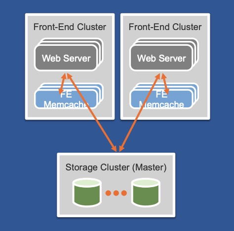
Regional Invalidations
部署多个 memcached server 集群，同一条数据的不同版本可能会出现在不同集群上。一种简单的解决方案是让 web server 每次发生 cache miss 时，将所有集群中的对应数据删除。显然这会造成大量的跨集群通信，又重新引发了网络问题。
既然数据在 DB 中只有一份，何不利用 DB 数据的更新日志来保证数据在不同集群间的最终一致性？
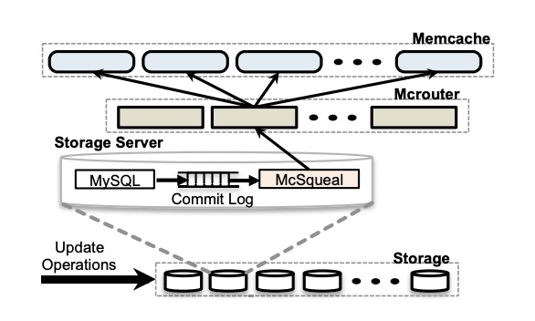
FB 在持久化层中使用 MySQL 集群，于是它们顺着思路开发了 mcsqueal 中间件，并将其部署到每个 MySQL 集群上。mcsqueal 负责读取 MySQL 的 commit log，解析其中的 SQL 语句，捕获数据更新信息，并将其广播给所有 memcached 集群。
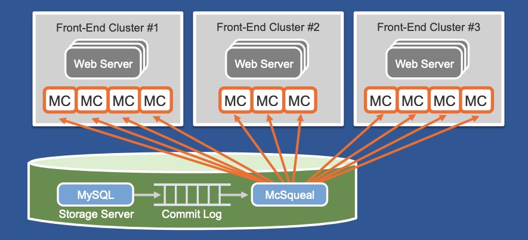
从架构图中，不难看出 fanout 问题再次出现，大量的跨集群通信数据同样可能将网络打垮。解决方案也不难想到，即分而治之：
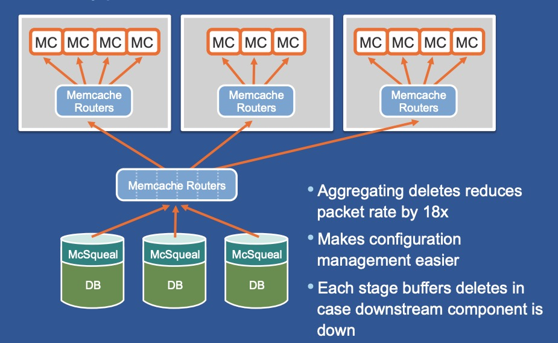
一个区域内部部署多个 memcache 集群能够给我们带来诸多好处，除了缓解热点问题、网络拥堵问题，还能让运维人员方便地下线单个节点、集群，而不至于使得 cash miss rate 忽然增大。
Regional Pools
是否所有数据都需要在一个区域中储存多份？如果一些数据访问频率很低，存一份就足够了。基于该思路，FB 会在单个区域内单独划分一个 pool 用来存储一些访问率低的数据。
Cold Cluster Warmup
上线新的 memcache 集群时，如果不预热可能会出现大量 cache miss。因此 FB 团队构建了一个 Cold Cluster Warmup 系统，可以让新的集群在发生 cache miss 时先从已经加载好数据的集群中获取数据，而不是从持久化存储中，如此一来，集群上线就能够变得更加平滑。
Across Regions: Consistency
随着 FB 的服务推广到世界各地，将 web servers 推进到离用户最近的地方能够给用户带来更好的体验；将 FB 的数据中心同步到不同区域 (region)，也能帮助提高 FB 服务的容灾能力；在新的区域可能在各方面产生规模经济效应。因此 memcache 服务也需要能够被部署到多个区域。
利用 MySQL 的复制机制，FB 将一个区域设置为 master 区域，而其它区域为只读区域，负责从 master 中同步数据。web servers 处理读请求时只需要访问本地的 DB 或缓存服务即可：
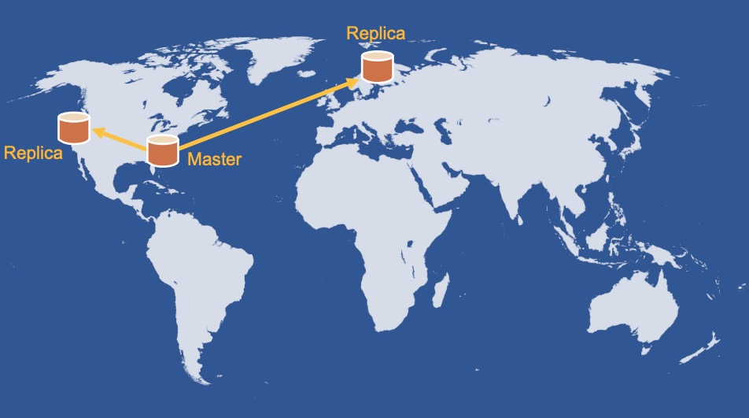
但这里将产生一个新的问题：只读区域的数据库有同步延迟，可能导致竞争条件出现。想象以下这个场景：
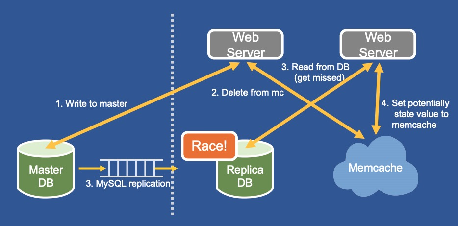
- 复制集群中的 web server A 写入数据到 master DB
- A 将本地 memcache 中的数据删除
- 复制集群中的 web server B 从 memcache 中读取数据发生 cache miss，从本地 DB 中获取数据
- A 写入的数据从 master DB 中同步到 replica DB，并通过 mcsqueal 将本地 memcache 中的数据删除
- web server B 将其读到的数据写入 memcache 中
此时，DB 与 memcache 中的数据将再次出现不一致，且必须等待数据过期之后才能恢复。如何解决这个问题？FB 在 memcache 上引入 remote marker 机制：
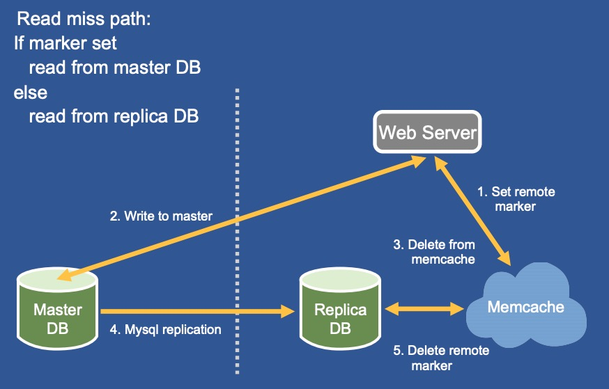
当 replica 区域的 web server 需要写入某数据 d 时：
- 在本地 memcache 上打上 remote marker，标记为 $r_{d}$
- 将 d 写入到 master DB 中
- 将 d 从 memcache 中删除 ($r_{d}$ 不删除)
- 等待 master DB 将数据同步到本地 replica DB 中，并且在 SQL 语句中埋入 $r_{d}$ 的信息
- 本地 replica DB 通过 mcsqueal 解析 SQL 语句中，删除 remote marker $r_{d}$
当 replica 区域的 web server 想要读取数据 d 发生 cache miss 时：
- 如果 memcache 中数据 d 带了 $r_{d}$，则从 master DB 中读取数据
- 如果 memcache 中数据 d 没有 $r_{d}$，则直接从本地的 replica DB 中读取数据
remote marker 机制实际上就是标记了 数据写入 master DB 但尚未同步到 replica DB 的中间状态。